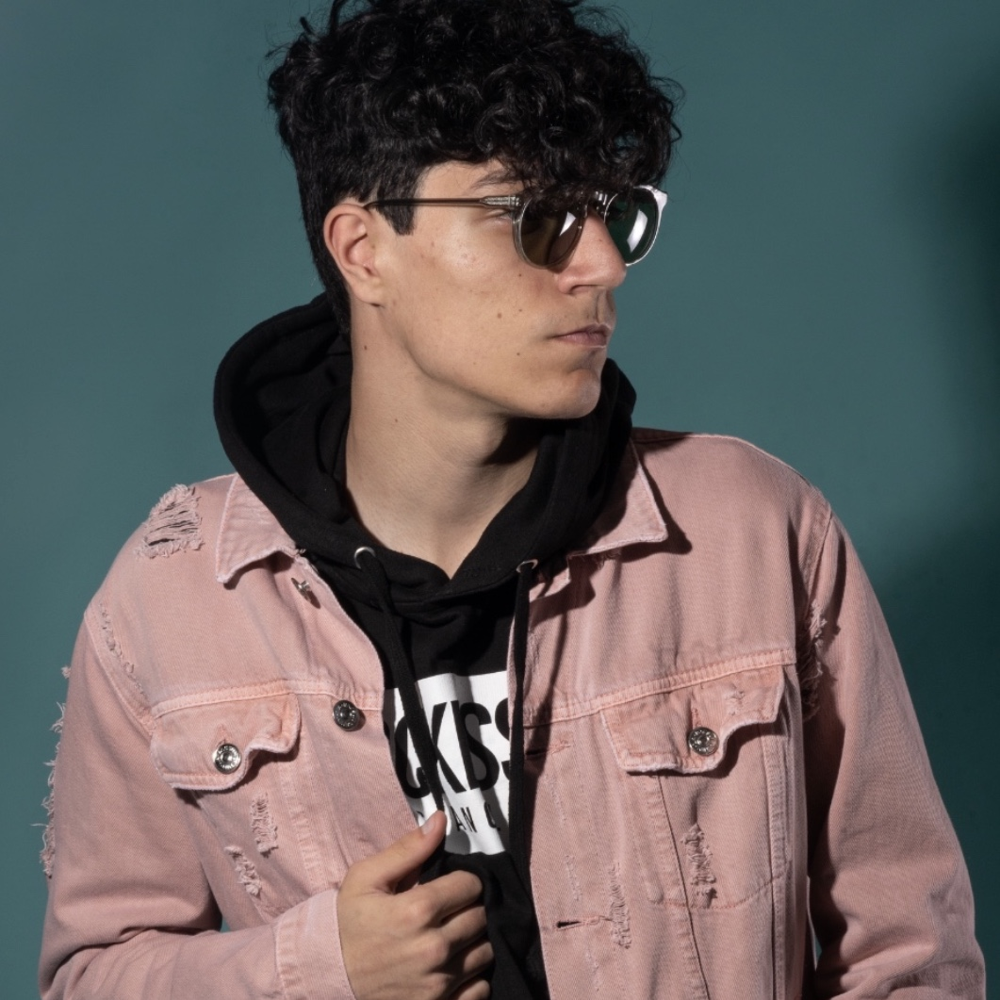

Ethan Garner
Ethan Garner is a senior at McKinney Boyd High School. He will soon be attending University of Texas at Austin for business school. Ethan has experience with marketing for different small companies, and will serve as the spokesperson and face of Road to Ivy League.
